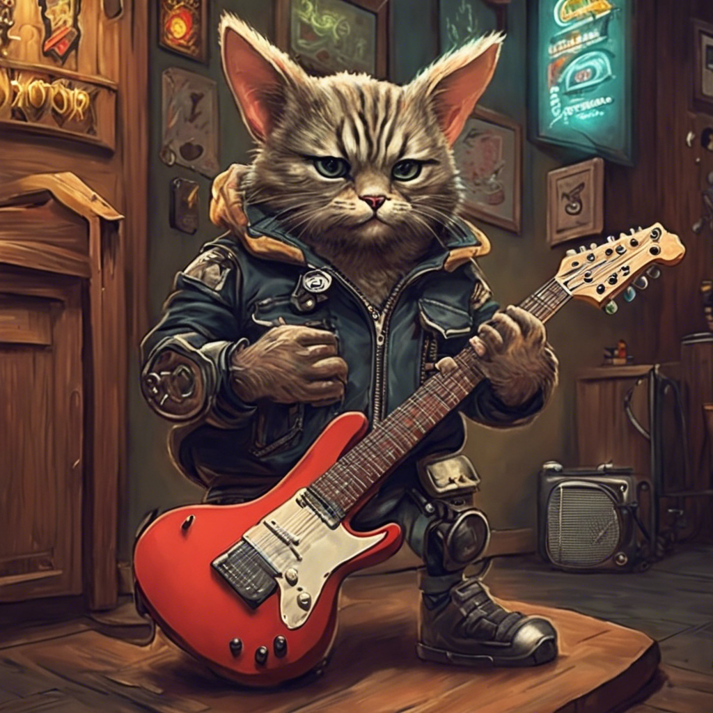
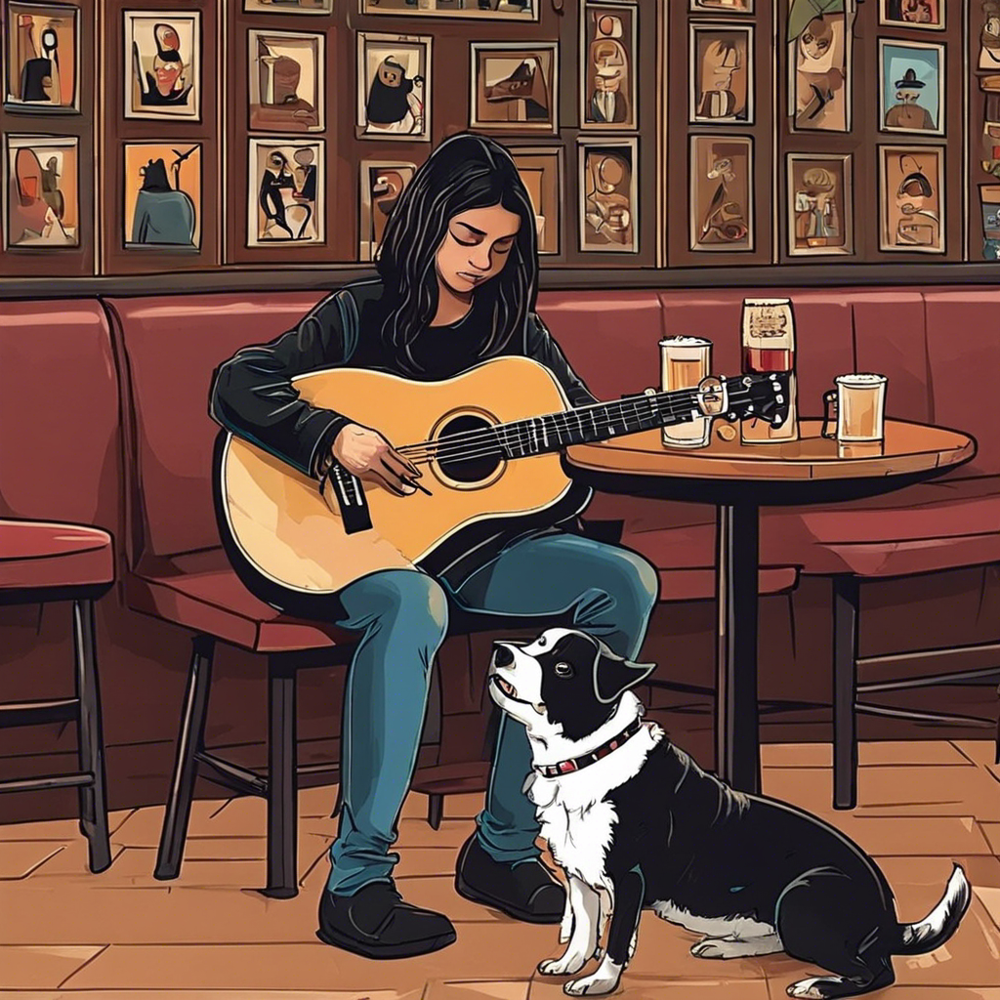
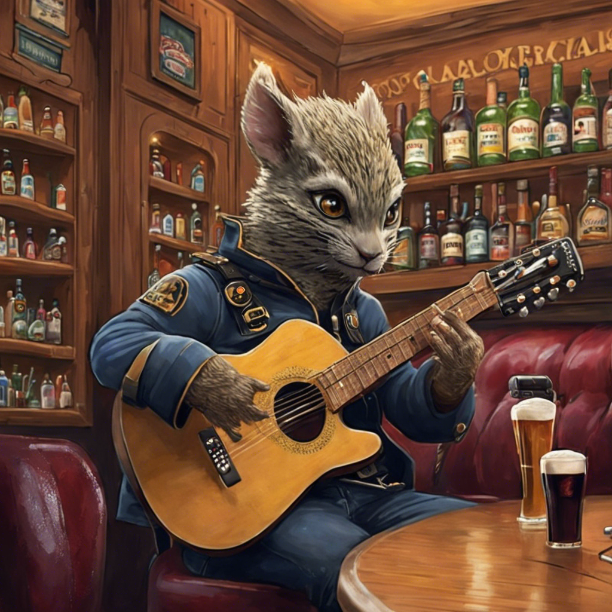
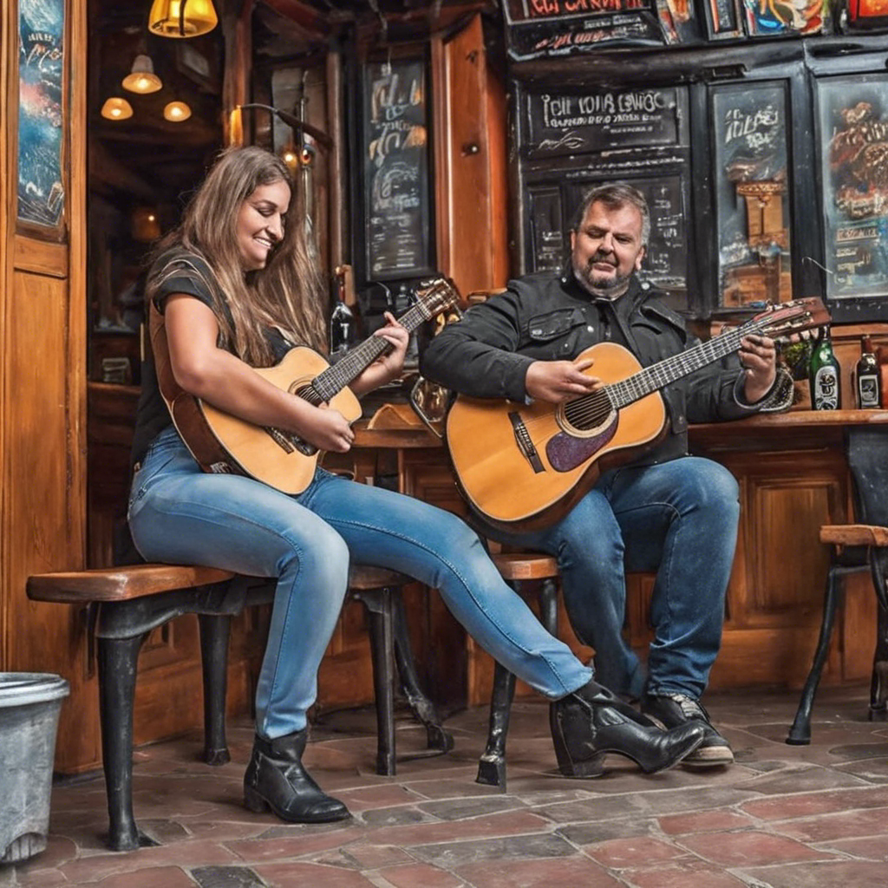
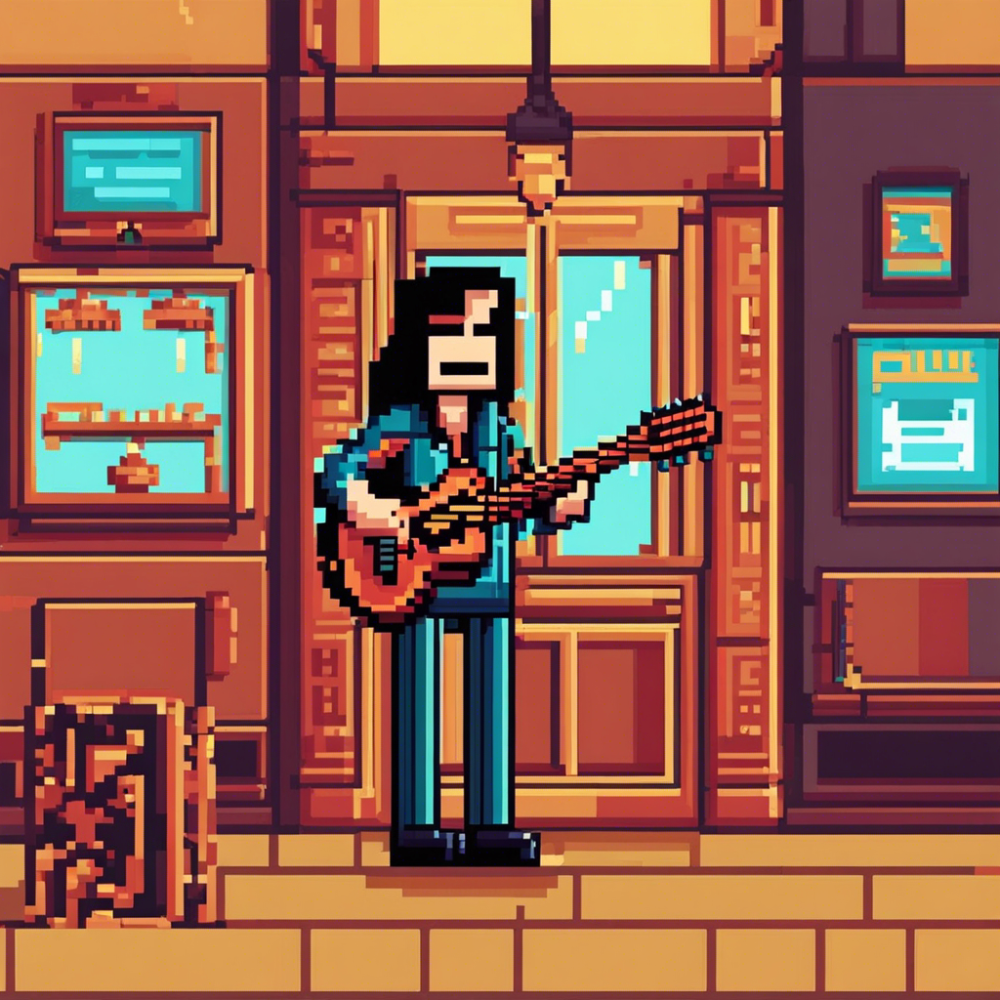

![]()
description
1 Real-ESRGAN_x2plus upscaler model
2 Stability-AI Stable Diffusion XL v0.9
3 Stability-AI Stable Diffusion XL v1.0
4 Stability-AI Stable Diffusion v1.6
5 Stability-AI Stable Diffusion v2.1
6 Stability-AI Stable Diffusion XL Beta v2.2.2Vamos a usar el paquete stabilityAI de David Schoch para conectarnos a la API de stability.ai para generar imágenes partiendo de prompts textuales.
Este es uno de los ejercicios que hicimos en clase y creo que les gustó a los estudiantes.
1 Conectando R con la API de stability.ai
Para conectarnos a la API de stability.ai hemos de seguir los siguientes pasos:
-
Instalar el paquete
remotes::install_github("schochastics/stabilityAI") -
Generar una API key en stability.ai. Para ello hay que ir aquí. donde nos logearemos con nuestra cuenta de Google para después generar una API key.
La APi key tendrá una pinta como esta:
xx-sbbbbbsbsbbsbbsbsbbsbsbbsbsbsbbsbsbsbbsbsbsbsbU. Guárdala porque tendrás copiarla en el fichero.Renviron -
Una vez tengas la API-key has de copiarla en el fichero
.Renviron. Para ello ejecuta en R:usethis::edit_r_environ()Se abrirá el fichero
.Renvironen RStudio o en el editor de texto que tengas configurado. Es fácil que este fichero lo tengas completamente vacio porque no lo has usado antes. Bien, has de escribir en el fichero.Renvironla siguiente linea:STABILITYAI_TOKEN="xx-sbbbbbsbsbbsbbsbsbbsbsbbsbsbsbbsbsbsbbsbsbsbsbU"Además, deja una linea vacia al final del documento
.Renviron.Ya hemos terminado el proceso de configuración. Ya podemos generar imágenes desde R.
Este proceso nos da acceso a una serie de modelos. Veamoslos
stabilityAI::get_engines_list()
2 Generando imágenes
Vamos a generar alguna imagen. Para ello usé pequeñas variantes de este promtp:
El cantautor apodado Pequeño mulo toca la guitarra junto a Laura de Comando autonomo en el pub Volander. El publico aplaude a rabiar. La perrita Jucar se pasea entre el público”
Código
my_IA_img <- stabilityAI::generate_txt2img(
text_prompts = "El cantautor apodado Pequeño mulo toca la guitarra junto a Laura de Comando autonomo en el pub Volander. El publico aplaude a rabiar. La perrita Jucar se pasea entre el público",
#style_preset = "pixel-art"
#- https://platform.stability.ai/docs/api-reference#tag/v1generation/operation/textToImage
)La API de StabilityAI nos devuelve la imagen pero codificada en base64. Para convertirla a un fichero de imagen podemos ejecutar el siguiente código:
Código
stabilityAI::base64_to_img(my_IA_img ,"./imagenes/my_IA_img_00")Generé 4 imágenes modificando ligeramente el promt. Este es el resultado:




3 Un poco sobre la API de stability.ai
La documentación de la API de stability.ai está aquí pero no he jugado muvho con ella. sólo he probado a cambiar el estilo de la imagen. Por ejemplo, si queremos que la imagen tenga un estilo de pixel-art, hemos de añadir el parámetro style_preset = "pixel-art". Los posibles estilos son: 3d-model, analog-film, anime, cinematic, comic-book, digital-art, enhance, fantasy-art, isometric, line-art, low-poly, modeling-compound, neon-punk, origami, photographic, pixel-art, y tile-texture.
Código
my_IA_img <- stabilityAI::generate_txt2img(
text_prompts = "El cantautor apodado Pequeño mulo toca la guitarra junto a Laura de Comando autonomo en el pub Volander. El publico aplaude a rabiar",
style_preset = "pixel-art"
#- https://platform.stability.ai/docs/api-reference#tag/v1generation/operation/textToImage
)
Código
my_IA_img <- stabilityAI::generate_txt2img(
text_prompts = "El cantautor apodado Pequeño mulo toca la guitarra junto a Laura de Comando autonomo en el pub Volander. El publico aplaude a rabiar",
style_preset = "neon-punk"
#- https://platform.stability.ai/docs/api-reference#tag/v1generation/operation/textToImage
)4 Más cosas
Evidentemente se puede acceder a los modelos de stability.ai sin usar un lenguaje de programación; por ejemplo, se puede acceder directamente desde Dream Studio1. Dream Studio es un sitio web para generar imágenes con Stable Diffusion, uno de los modelos de stabilty.ai.
Sí, generar imágenes a partir texto es divertido, pero recuerda que hay multitud de repositorios de imágenes (y otros recursos) públicas, por ejemplo The Public Domain Review o Open Culture. Otras como Unsplash o Pexels permiten descargar imágenes de forma gratuita y legal.